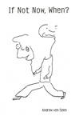

Books - If Not Now, When?
Mayflower Unlimited publishes books designed to aid you in realizing your intrinsic Right to Liberty and how it applies to your life right now. Our aim is to inform, entertain, and inspire.

Written and illustrated by Andrew Von Sonn, If Not Now, When? is filled with cartoons and thoughts about life, identity, perspective, and our current monetary system.
Please contact us to be informed when the paperback edition is made available again.
Click here for the Kindle edition for Kindle, iPhone, iPad, Android, Blackberry, PC and Mac.
If Not Now, When?
We are individuals with inalienable rights to life, liberty, and the pursuit of happiness. Yet, as we look at our modern lives, this doesn't seem so self evident.
Succumbing to social norms and expectations created by the business of mass media, Americans have little grasp of who they are and have forgotten the goals eloquently stated in our Declaration of Independence.
Reading like a modern day Tao Te Ching, Andrew Von Sonn describes and illustrates the psychological shift needed to regain our sanity in a world where our individuality, freedom, and democratic political system are up for sale.
Using gentle satire, Andrew Von Sonn holds a mirror to personal alienation, cookie-cutter lives, and the rat race mentality, beckoning us to explore our real lives by delving into a sense of absurdity. Using this absurdity, we can break down our self-limiting paradigm and embrace what is real and true.
Looking outside of our semantics, our economic religions, and our video boxes, we may find what is absurd is far closer to truth than we think. Questions of perception and reality are best explored experientially.
Von Sonn's collection of political and social cartoons and commentary encourages self analysis and cheers us on in our search for our authentic selves. He reflects on a life lived in the haze of consumerism, corporate efficiency, and obedience to a religion on its knees to the Gross National Product.
Andrew Von Sonn's experience as a lawyer and activist melds with a Buddhist viewpoint. He declares that being present and in the moment is a political urgency. Changing the current paradigm is key to empowering We The People and to call a foul on government hypocrisy.
Von Sonn explains the illegality of our current money system and the use of usury to wean money from the American people. An economic system that must continually keep growing in order to survive produces people who are never able to rest, who must work endless hours to pay debts held invisibly over their heads.
This book graciously encourages us to break the spell and be free - and to do it now!
Please contact us to be informed when the paperback edition is made available again.
The Kindle edition for Kindle, iPhone, iPad, Android, Blackberry, PC and Mac is $6.95 at Amazon.com.
 Return to Books Return to Books
|